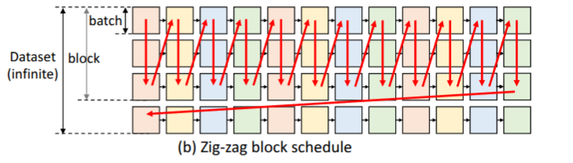
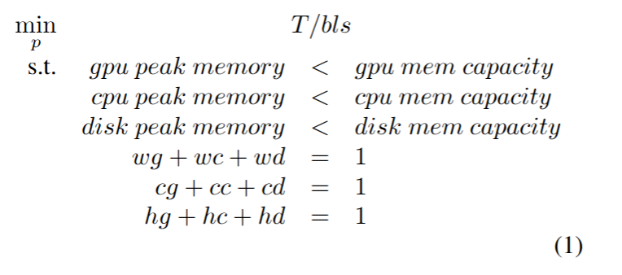

FlexGen: 利用单 GPU 实现大语言模型的高吞吐量生成推理¶
Key Idea
将推理中的内存需求下放到 CPU/DISK，用延迟换吞吐量和内存需求。
背景与现状¶
当前的问题
大模型需要巨量的显存来完成推理。例如，OPT-175B 模型通常需要 5 张 A100 (80GB) 的显卡来加载权重。这限制了个人开发者或小型机构的使用。
主流的解决方法
-
Model Compression (压缩模型)：通过优化模型的存储和加载。
-
Quantization (量化)：将模型参数从高精度的浮点数（如 FP32 或 FP16）转换为低精度的数值（如 INT8, INT4 甚至 1.5-bit）。
-
Pruning (剪枝)：结构“剔骨”，删除对最终输出贡献小的分支和参数。
-
Distillation (知识蒸馏)。
-
Collaborative Inference (协作推理)。
-
Offloading (卸载)：空间换时间（本文所用方法）。
Offloading 当前面临的挑战
-
挑战一：高效的规划算法
如何设计一个高效的规划算法，对三种 Tensors (Weights, Activations, Key-value (KV) Cache) 哪些需要被卸载、卸载在哪儿、什么时候卸载，进行合理的规划。
关于 Dependency Graph 的疑问
原文： The batch-by-batch, token-by-token, and layer-by-layer structure of the computation forms a complex dependency graph.
这里的 Dependency Graph 是什么意思？类似于“寄存器之间的依赖关系”吗？Token-by-token、layer-by-layer 之间的计算依赖大概能够理解，但是为什么 Batch-by-batch 之间也存在依赖关系？
已有的方法： 继承训练的策略，但是都是次优点，I/O 过多，吞吐量远低于理论值。
-
挑战二：有效的压缩策略
如何设计有效的压缩策略，在不显著降低模型精度的前提下，进一步减少显存占用。
核心机制：Zig-zag 块调度¶
FlexGen 提出了一种不同于传统按行调度的策略——Zig-zag Block Schedule。

我们将推理过程抽象为一个方格阵列，一个方格代表一个 batch 中一个 Transformer Layer 的计算流程。其遵循以下规则：
-
水平依赖：一个方格只有在它所在行的所有左侧方格都计算完成后才能计算。
-
加载约束：要在设备上计算一个方格，必须将它的所有输入（权重、激活值、缓存）加载到同一个设备上。
-
存储逻辑：计算完成后，一个方格会产生两个输出：激活值和 KV 缓存。
-
激活值：应存储直到它的右侧相邻方格计算完成。
-
KV 缓存：应存储直到同一行的最右侧方格计算完成。
-
容量限制：任何时候，设备上存储的张量的总大小不能超过它的内存容量。
文章中提到的 Zig-zag 调度策略如下：

并行优化 (Overlapping)
由于以下操作是不相干的，所以下一层权重的加载、下一批次的激活/缓存加载、前一批次的激活/缓存存储，它们可以并行进行；在这种模式下，只有两个关键变量：GPU batch size 和 number of GPU batches in a block。
张量放置比例¶
系统根据硬件配比，动态调整张量在 GPU (\(w_g\))、CPU (\(w_c\)) 和 Disk (\(w_d\)) 中的存放比例。
对于激活值，使用比例 \(h_g, h_c, h_d\)。
对于 KV 缓存，使用比例 \(c_g, c_c, c_d\)。
张量粒度
这里还额外提到了张量的粒度的问题，我们可以考虑一个Block级别的张量如何放置，或者一个Transformer Layer级别的张量如何放置，或者一个Batch级别的张量如何放置。不同粒度的张量放置会有不同的开销和性能表现。（类似于数据库中的粒度的Trade-Off?）
计算委托¶
有的计算我们可以委托给 CPU 进行。
成本核算
- 将 KV 缓存移动到 GPU 的成本是 \(b \times s \times h \times 4\)。
- 反方向将激活移动到 CPU 的成本是 \(b \times h \times 4\)。
如果我们面对一个较长的序列，I/O 成本将会超出计算成本。在这种情况下，将 KV 缓存保留在 CPU 端计算反而更具效益。
线性规划求解¶
那么我们可以建模计算的模型如下：
对于\(T_{pre}\)用于Prefilling 一层的时间，\(T_{gen}\)用于decoding中一层的时间，假设我们的I/O层及中的各个传输可以并行（也存在overlapping），那么 \(T_{pre} = max{(ctog^p , gtoc^p, dtoc^p,ctod^p,comp^p)}\)这些部分的最大值（对于T_gen也是类似的）。对于 dtoc （代表从磁盘到CPU的latency）这样的我们都可以估计其大小（在附录中，相对较长）。那么总的时间是:\(T_{pre} \times l + T_{gen} \times (n-1) \times l\)
总而言之，这一步分的策略中，总体的变量为： 块大小 bls , batch的大小端gbs , 9个如何放置张量的百分比。有如下的约束：一般而言 gbs 是4的倍数，要求bls小于20，那么我们可以得到一个线性规划问题。

这样的问题可以通过线性规划求解器来求解，得到最优的调度策略。
拓展¶
多个GPU的场景，如果LLM可以分为m个GPU来使用流水线的模型并行，并且GPU都遵循同样的模式，那么这上面的Offloading等价于对于 n/m 的Transformer 上进行 Single GPU的优化。
此外，FluxGen 还采用了量化的方式来进一步的减小I/O的开销；同时还可以利用稀疏注意力的机制，只取最大的 K 个注意力权重的索引。这样就可以进一步的减少 I/O 的开销。
Question
这样的工作与DeepSpeed，Llama.cpp这些框架的关系是？